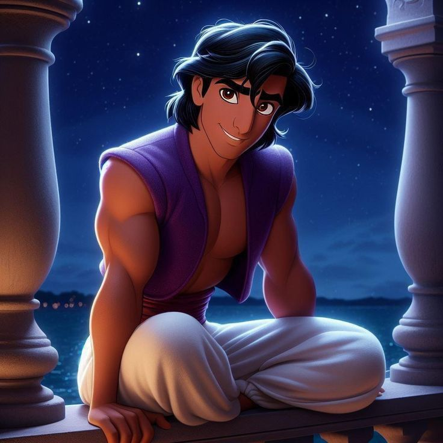
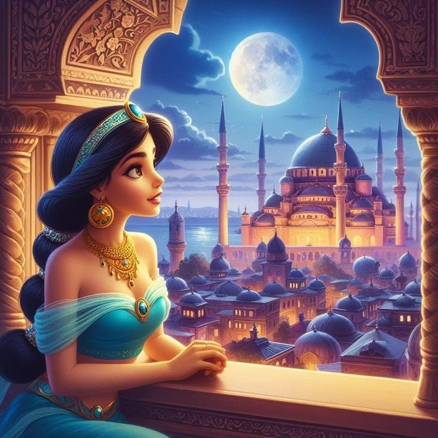
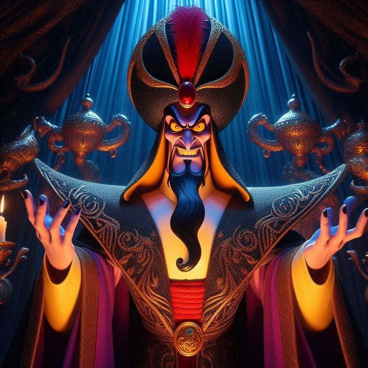
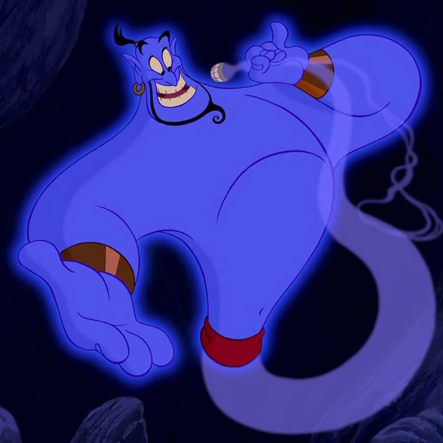
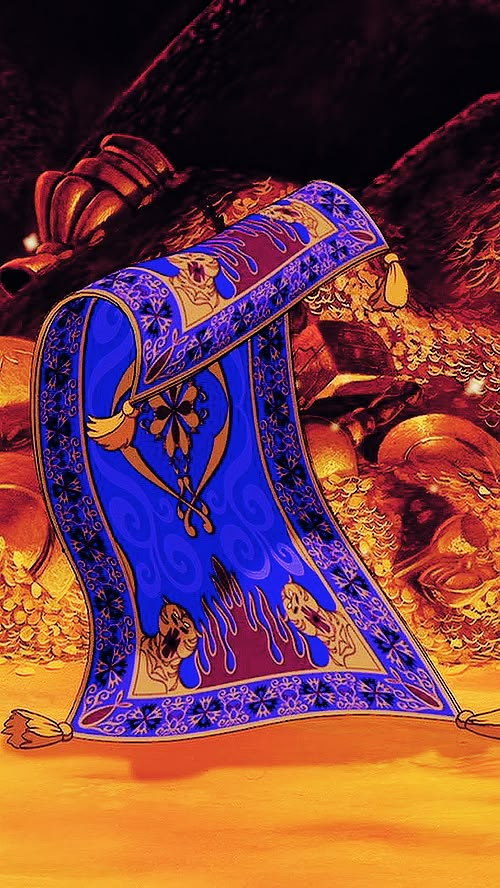
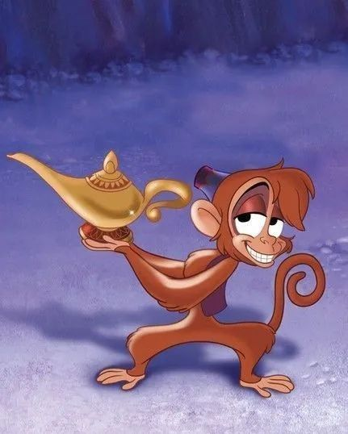
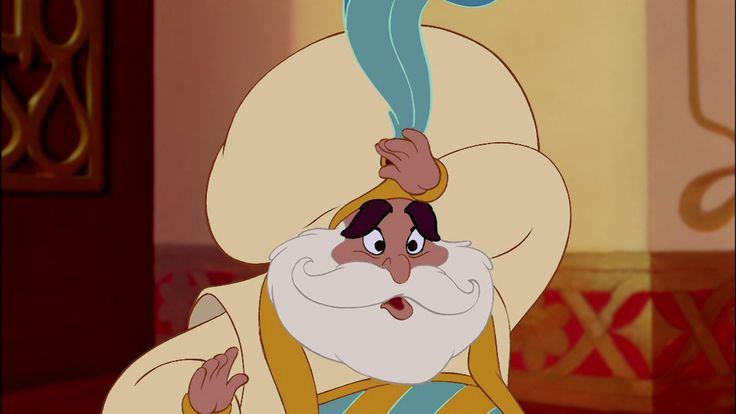

Yuk Kenalan Sama Karakter-Karakter Ajaib!
Aladdin: Pemuda pemberani dan cerdik yang punya hati emas. Dia suka menolong orang dan punya mimpi besar mengubah nasib!
Putri Jasmine: Putri kerajaan yang cantik, cerdas, dan punya tekad kuat. Ia ingin bebas memilih jalan hidupnya sendiri.
Jafar: Penyihir jahat yang ambisius. Ia ingin merebut lampu ajaib dan menguasai kerajaan!
Jin Ajaib: Jin lucu dan penuh energi yang tinggal di dalam lampu. Ia bisa mengabulkan 3 permintaan... asal jangan minta lebih, ya 😄!
Karpet Terbang: Karpet terbang yang setia menemani petualangan Aladdin. Dia bisa terbang tinggi dan juga... punya ekspresi lucu loh!
Abu: Monyet kecil sahabat Aladdin yang setia dan juga suka bertingkah lucu. Ia sering membantu Aladdin mencuri makanan atau lolos dari bahaya. 
Iago: Burung beo milik Jafar yang bisa bicara. Ia juga jahat dan sering memberi saran ke Jafar, tapi kadang kocak juga karena suka marah-marah sendiri.

Sultan: Ayah dari Putri Jasmine. Seorang raja yang baik hati, tapi mudah dipengaruhi Jafar. 
Wah, karakternya seru-seru ya! Siap kenalan lebih dekat lewat petualangan mereka? Yuk lanjut!